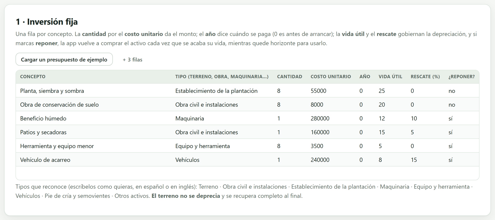
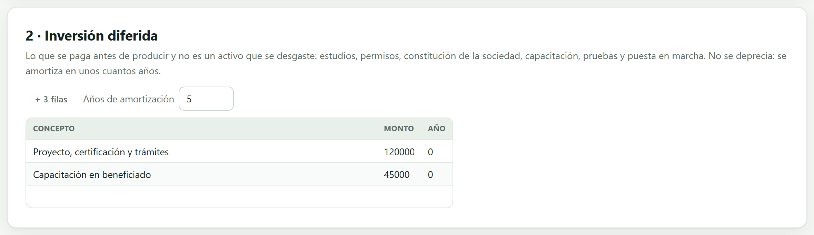
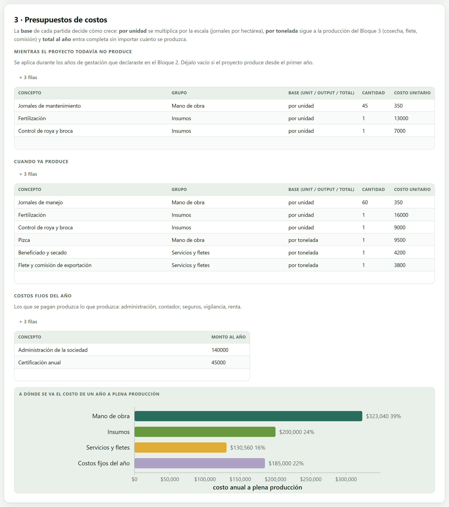
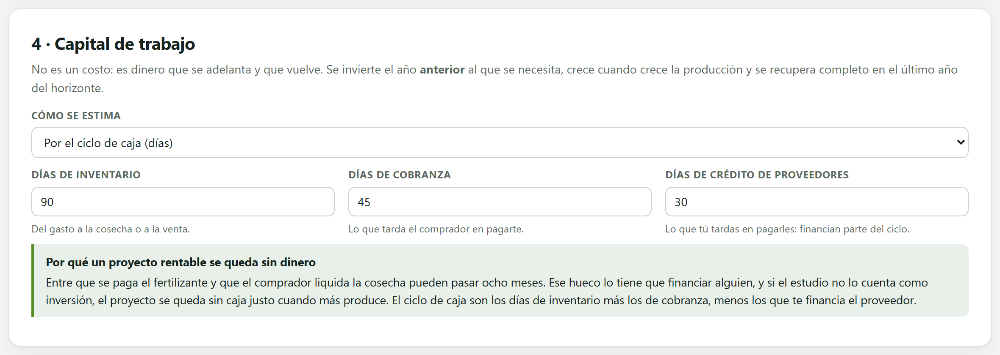
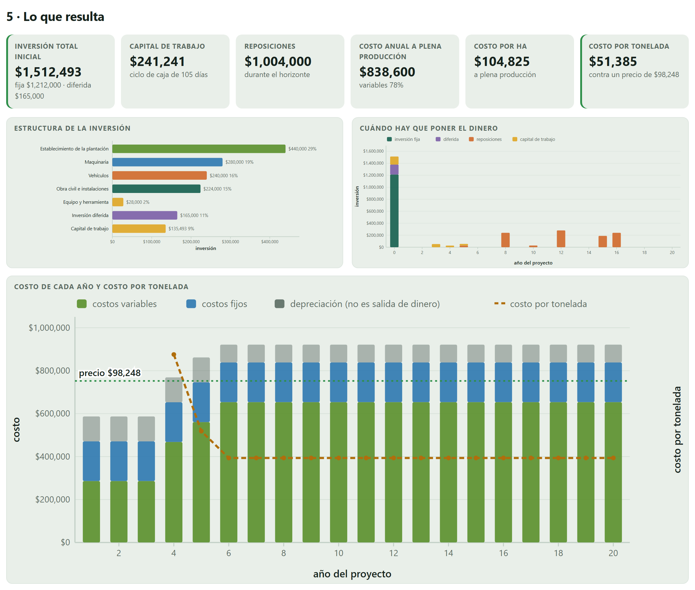
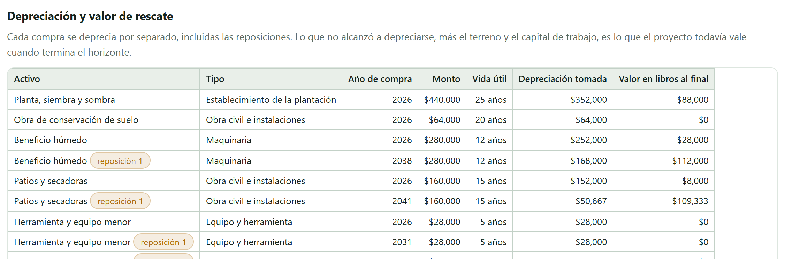

La parte más laboriosa del estudio y la que más pesa en el resultado. Cinco mini-hojas convierten cotizaciones y paquetes tecnológicos en tres cosas que los bloques siguientes necesitan: el calendario de inversiones, el costo de cada año y el dinero que hay que tener parado para operar.
Un jurado puede discutir la tasa de descuento media hora, pero lo que de verdad revisa con lápiz es este bloque: si las cotizaciones son reales, si el paquete tecnológico corresponde al cultivo y a la región, y si no falta nada. Un estudio se cae más veces por un presupuesto incompleto que por un error de método.
La app separa cada partida en cantidad y costo unitario precisamente por eso: actualizar un precio que quedó viejo es cambiar una celda, no rehacer el presupuesto. Y todo se escribe por unidad productiva —por hectárea, por cabeza, por línea—, así que el mismo presupuesto sirve para tres hectáreas o para trescientas.
| Lo que sale de aquí | Quién lo usa |
|---|---|
| Calendario de inversiones | El Bloque 5, para saber cuánto crédito hace falta y en qué año; y el flujo del proyecto del Bloque 6. |
| Depreciación de cada compra | El estado de resultados del Bloque 5: no es dinero, pero baja el impuesto. |
| Costo de cada año | El estado de resultados, el punto de equilibrio y el costo por tonelada. |
| Capital de trabajo | El crédito de avío del Bloque 5 y el saldo de caja que decide si el proyecto arranca. |
| Valor de rescate | El último año del flujo, en el Bloque 6. |
La primera mini-hoja lista lo que se compra: terreno, obra, plantación, maquinaria, equipo, vehículos, pie de cría. Cada renglón lleva siete datos y ninguno sobra.

| Columna | Qué hace |
|---|---|
| Concepto | El nombre que aparecerá en el calendario y en la tabla de depreciación. |
| Tipo | Se escribe con palabras y la app lo reconoce. Decide dos cosas: si el activo se deprecia y qué vida útil proponer. |
| Cantidad × costo unitario | Separados a propósito: 8 hectáreas × $55,000 de establecimiento, un beneficio húmedo × $280,000. |
| Año | En qué año del proyecto se compra. Casi todo va en el año 0, pero una ampliación puede ir en el 3. |
| Vida útil | Años que dura. De ella salen la depreciación y, si se marca, la reposición. |
| Rescate (%) | Qué porcentaje de su valor conserva al final de su vida. Baja la base depreciable. |
| ¿Se repone? | Sí o no. Si sí y la vida termina antes del horizonte, la app vuelve a comprarlo solo. |
| Tipo de activo | ¿Se deprecia? | Vida útil que propone |
|---|---|---|
| Terreno | No | — |
| Obra civil e instalaciones | Sí | 20 años |
| Establecimiento de la plantación | Sí | 25 años |
| Maquinaria | Sí | 10 años |
| Equipo y herramienta | Sí | 5 años |
| Vehículos | Sí | 8 años |
| Pie de cría y semovientes | Sí | 6 años |
| Otros activos | Sí | 10 años |
El cafetal tiene seis partidas y un horizonte de 20 años. Con solo marcar ¿se repone? en cuatro de ellas, la app programa siete compras adicionales:
| Herramienta y equipo menor (5 años) | se vuelve a comprar en los años 5, 10 y 15 |
| Vehículo de acarreo (8 años) | en los años 8 y 16 |
| Beneficio húmedo (12 años) | en el año 12 |
| Patios y secadoras (15 años) | en el año 15 |
| Reposiciones en el horizonte | $1,004,000 |
La plantación (25 años) y la obra de conservación (20) no se reponen: su vida alcanza para todo el horizonte. Cada reposición se deprecia por separado, desde el año en que se compra.
Si un activo se agota a la mitad del horizonte y no se repone, el proyecto seguiría produciendo sin herramienta, sin vehículo o sin planta de beneficio. La app lo advierte. Pero la decisión contraria también cuesta: cada reposición es una salida de dinero que puede volver a hundir la caja, y por eso conviene que las reposiciones grandes caigan en años de producción plena, no en los primeros.
Lo que se paga antes de operar y no es un activo que se pueda tocar: el proyecto ejecutivo, los permisos, la certificación, la capacitación, la puesta en marcha. No se deprecia —se amortiza— y la app la reparte en partes iguales durante los años que indiques.

Un gasto se resta completo el año en que ocurre; una inversión diferida se reparte. La diferencia cambia el impuesto de los primeros años, que es justo cuando el proyecto menos aguanta. Si el horizonte termina antes de amortizarla toda, la app avisa cuánto quedó sin amortizar.
Tres mini-hojas: lo que cuesta establecer (los años de gestación), lo que cuesta operar (los años de producción) y los costos fijos que se pagan pase lo que pase.

| Base | Qué significa | Ejemplo del café |
|---|---|---|
| Por unidad de producción | Se multiplica por la escala. Sigue al tamaño del proyecto, no a la cosecha: se paga aunque el año salga malo. | 60 jornales × $350 por hectárea |
| Por tonelada producida | Se multiplica por la producción del año que calculó el Bloque 3. Es cero durante la gestación y crece con la maduración. | Pizca, $9,500 por tonelada |
| Monto total al año | Una cantidad fija, independiente de la escala y de la cosecha. | Certificación anual, $45,000 |
Los seis grupos —mano de obra, insumos, maquinaria y energía, servicios y fletes, administración y otros— no cambian ningún cálculo financiero, pero sí sirven para dos cosas: la figura de composición del costo y, sobre todo, la evaluación social del Bloque 8, que aplica un factor de conversión distinto a cada grupo. Vale la pena clasificarlos bien desde aquí.
| Mano de obra, 60 jornales × $350 × 8 ha | $168,000 |
| Fertilización, $16,000 × 8 ha | $128,000 |
| Control de roya y broca, $9,000 × 8 ha | $72,000 |
| Pizca, $9,500 × 16.32 t | $155,040 |
| Beneficiado y secado, $4,200 × 16.32 t | $68,544 |
| Flete y comisión de exportación, $3,800 × 16.32 t | $62,016 |
| Costo variable | $653,600 |
| Administración de la sociedad + certificación | $185,000 |
| Costo total del año | $838,600 |
Son $104,825 por hectárea y $51,385 por tonelada, con un 78 % de costo variable. Ese costo por tonelada es el número que hay que comparar con el precio proyectado del Bloque 3 —$102,178— antes de seguir: si fuera mayor, el proyecto perdería dinero operando, y la app lo avisaría.
Para el punto de equilibrio del Bloque 5 lo que importa es qué costo sigue al volumen vendido. Los costos por tonelada lo hacen; los de por hectárea, no: un jornal de poda se paga igual aunque la cosecha salga mala. Por eso la app guarda los costos con sus dos cortes a la vez —variable y fijo, por un lado; por unidad, por tonelada y total, por otro— y cada bloque usa el que le corresponde.
El dinero que hay que tener parado para que el proyecto opere: lo que se gasta antes de cobrar. No es un gasto —se recupera al final— pero mientras el proyecto vive, ese dinero está inmovilizado y hay que conseguirlo.

| Método | Cómo se calcula | Cuándo usarlo |
|---|---|---|
| Ciclo de caja | Días de inventario + días de cobranza − días que dan los proveedores, sobre el costo del año. | El más defendible: cada plazo se justifica con la práctica del cultivo y del mercado. |
| Meses de operación | Los meses que indiques del costo anual. | Cuando el ciclo es evidente: «se necesitan tres meses de operación». |
| Porcentaje del costo | El porcentaje que indiques. | Cuando hay una regla de la institución que financia. |
En el cafetal, el costo del primer año es $471,000 y el ciclo son 105 días: $135,493. Conforme la plantación madura y el costo sube, la necesidad crece hasta $241,241 a plena producción.
El capital de trabajo del año 1 hay que tenerlo antes de empezar el año 1, así que la app lo pone en el año 0; cuando la necesidad crece, invierte solo el incremento en el año previo. Al terminar el horizonte, todo lo acumulado se recupera y entra como parte del valor de rescate —en el cafetal, $241,241 de los $796,574 de rescate total son capital de trabajo que regresa—. Equivocarse en esto es el error que hacía que el balance general del Bloque 5 no cuadrara.
La quinta tarjeta reúne todo y es la que se lleva a la revisión: la inversión total, su estructura, el costo de cada año y el calendario completo.

| Concepto | En el cafetal |
|---|---|
| Inversión fija | $1,212,000 |
| Inversión diferida | $165,000 |
| Capital de trabajo del primer año | $135,493 |
| Inversión inicial | $1,512,493 |
| Reposiciones durante el horizonte | $1,004,000 |
| Costo de operación a plena producción | $838,600 al año |
| Valor de rescate al final | $796,574 |

Depreciar no saca un peso de la caja: el dinero salió cuando se compró el activo. Pero la depreciación es deducible, así que baja el impuesto, y ese ahorro sí es dinero. Por eso el estado de resultados del Bloque 5 la resta para calcular el impuesto y después la vuelve a sumar para llegar al flujo de efectivo. Quien la olvida en el flujo subestima el proyecto; quien la resta dos veces lo hunde.
| Clase | Lo que revisa |
|---|---|
| Error | Un proyecto sin ninguna inversión; un proyecto sin costos de producción —sin ellos parecería rentable por construcción—. |
| Advertencia | Activos que terminan su vida antes del horizonte y no están marcados para reposición; costos por tonelada cuando el Bloque 3 todavía no reporta producción; un ciclo de caja de más de un año o de cero días; que el costo supere al ingreso en todos los años con producción; que el costo por tonelada sea mayor que el precio proyectado. |
| Nota | Cuánto suman las reposiciones del horizonte; que el terreno no se deprecia y se recupera completo; que el capital de trabajo pesa más que la inversión fija —normal en engordas y agroindustria—; cuánta inversión diferida queda sin amortizar. |
| Si el costo por tonelada se acerca al precio proyectado | entonces el margen es delgado: revisa el presupuesto antes de seguir, porque el Bloque 7 va a mostrar que cualquier viento tumba el proyecto. |
| Si hay activos que se agotan sin reposición | entonces decide: repón, o acorta el horizonte a la vida del activo que define el proyecto. |
| Si el capital de trabajo salió muy grande | entonces revisa los días de inventario y de cobranza: son el supuesto menos discutido y el que más dinero mueve. |
| Si ya cuadra | entonces descarga el calendario en .csv: es el anexo de inversiones del estudio. |
El Bloque 5 va a pedir crédito sobre esta inversión: si vuelves aquí y agregas una partida, el monto del crédito se recalcula solo.